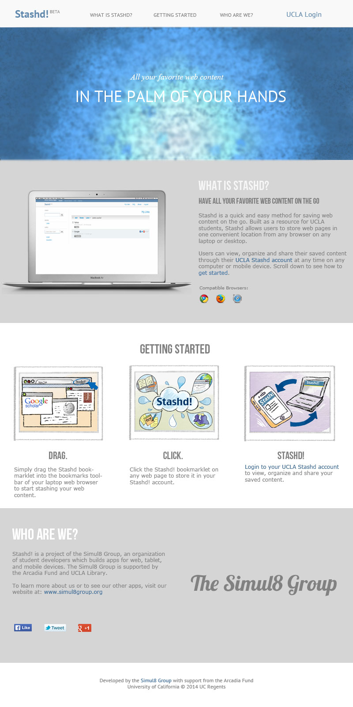
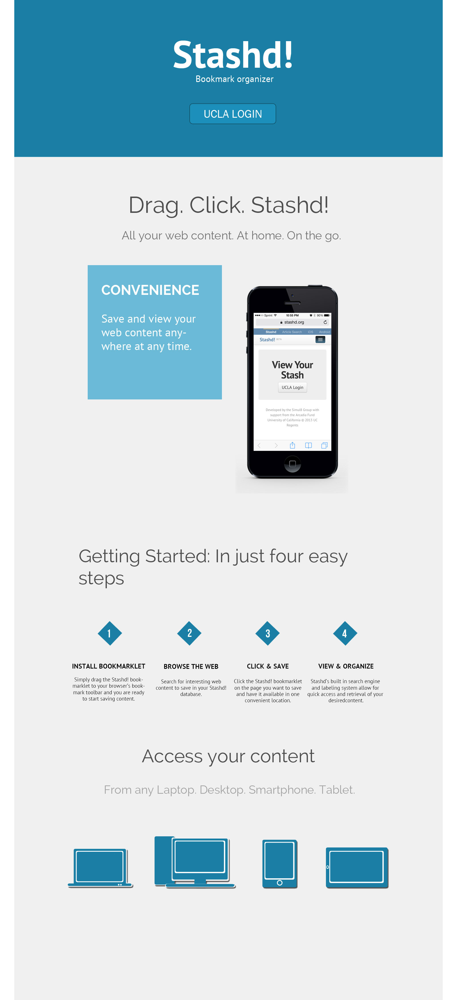

<div class="content">
    <div id="stashd" class="project">
        <p class="p-nav"><a class="change-page next" href="/daily-bruin">next &#8594;</a></p>
        <h3>Stashd</h3>
        <ul class="skills-list top">
            <li>Web Design</li>
            <li>Photoshop</li>
        </ul>
        <div class="p-gallery">
            
            
        </div>
        <ul class="skills-list bottom">
            <li>Web Design</li>
            <li>Photoshop</li>
        </ul>
        <div class="p-details">
            <p class="p-description">Stashd is a web application that allows UCLA students to save and organize research articles and other web content in a single easily accessible location. The Stashd landing page serves as an entry point for the app and an overview of the app's function. This mock-up was made in Adobe Photoshop. Graphics are property of Simul8 Group/BuildUCLA graphic artists.</p>
        </div>
        <p class="p-nav"><a class="change-page next" href="/daily-bruin">next &#8594;</a></p>
    </div>
</div>